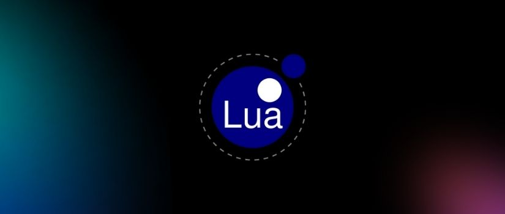

Lua: A Linguagem De Programaçao Brasileira
Escrito por Matheus Pietro - Atualizado em 03/07/24

Lua é uma linguagem de programação leve, poderosa, eficiente e de propósito geral. Foi desenvolvida originalmente no Brasil, na Pontifícia Universidade Católica do Rio de Janeiro (PUC-Rio), e é amplamente utilizada em diversas áreas, como desenvolvimento de jogos, automação, aplicações web e embarcadas.
Características Principais
- Portabilidade: Lua é altamente portátil, sendo suportada em uma ampla gama de plataformas, desde sistemas embarcados até grandes servidores.
- Flexibilidade: Lua é uma linguagem extremamente flexível, permitindo diversos paradigmas de programação, como programação procedural, orientada a objetos e funcional.
- Embeddability: Lua foi projetada para ser facilmente incorporada em outras aplicações escritas em C e outras linguagens, o que a torna uma excelente escolha para extensibilidade e personalização.
- Desempenho: Apesar de ser uma linguagem interpretada, Lua é conhecida por seu desempenho eficiente e baixo consumo de recursos.
- Comunidade Ativa: Lua possui uma comunidade ativa de desenvolvedores e uma grande variedade de bibliotecas e frameworks disponíveis.
Aplicações e Mercado
Devido a essas características, Lua é frequentemente usada em jogos, sistemas embarcados, aplicações de automação e scripts em geral. Ela é conhecida por sua facilidade de integração e por ser uma linguagem poderosa em um pacote compacto.

Criadores da linguagem de programação lua.
Aprendizado e Desenvolvimento
Aprendizado
- Sintaxe Simples: Lua possui uma sintaxe limpa e fácil de aprender, o que a torna acessível para iniciantes.
- Documentação Rica: A linguagem possui uma documentação detalhada e bem organizada, incluindo tutoriais, guias e referências que facilitam o aprendizado.
- Ativa: Existem comunidades online ativas de desenvolvedores Lua que podem ajudar com dúvidas e compartilhar conhecimento.
- Exemplos Práticos: Aprendizado prático é essencial; escrever pequenos programas e scripts ajuda a entender como Lua funciona na prática.
- Integração com Aplicações: Lua é frequentemente usada em jogos, aplicativos embarcados e sistemas de automação, então explorar essas áreas pode ser útil para aprender a linguagem.
Desenvolvimento
- Aplicações Embarcadas: Lua é frequentemente usada em sistemas embarcados devido à sua eficiência e simplicidade.
- Jogos e Simulações: Muitos jogos usam Lua para scripts de gameplay e automação de tarefas.
- Extensibilidade: Lua é altamente extensível, permitindo que desenvolvedores incorporem facilmente a linguagem em seus próprios projetos.
- Bibliotecas e Frameworks: Existem várias bibliotecas e frameworks disponíveis para Lua que facilitam o desenvolvimento de diferentes tipos de aplicações.
- Boas Práticas de Desenvolvimento: Seguir boas práticas de desenvolvimento de software, como modularidade e legibilidade de código, é importante para projetos em Lua também.
Conclusão
Em conclusão, Lua é uma linguagem de programação versátil, leve e poderosa, que ganhou popularidade em uma variedade de campos devido à sua simplicidade, portabilidade, flexibilidade, desempenho e capacidade de incorporação. Sua sintaxe simples, combinada com um conjunto robusto de recursos, a torna uma escolha atraente para desenvolvedores que buscam uma linguagem eficiente e fácil de aprender. Com uma comunidade ativa e uma ampla gama de aplicativos, desde desenvolvimento de jogos até automação e sistemas embarcados, Lua continua a ser uma ferramenta valiosa no arsenal de linguagens de programação modernas.
